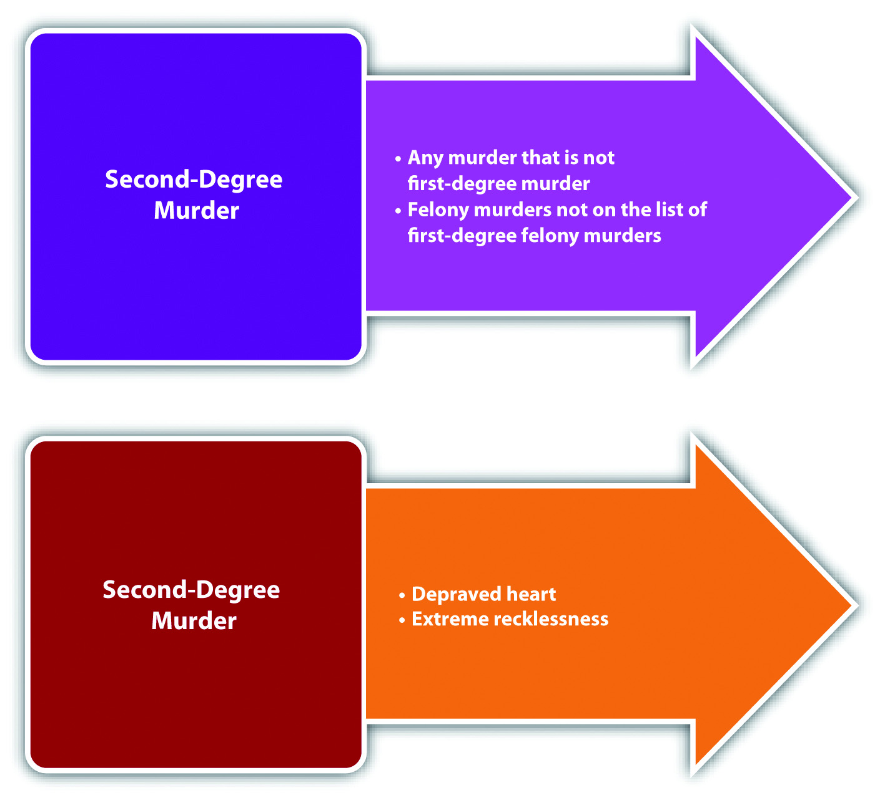

States that classify murder as either first or second degree often define second-degree murderAny murder that is not first-degree murder, including implied malice and depraved heart murders. as any murder that is not first-degree murder.Mich. Comp. Laws § 750.317, accessed February 24, 2010, http://www.legislature.mi.gov/(S(gjc5ys55et3ukfj0uq5uehqm))/mileg.aspx?page=GetObject&objectname=mcl-750-317. This definition excludes murders that are premeditated or committed with a specified means. It includes implied malice murder, such as murder committed with the intent to inflict serious bodily injury and depraved heart murder.
Some statutes use the Model Penal Code’s language and define second-degree murder as a killing executed recklessly, under circumstances manifesting extreme indifference to the value of human life.K.S.A. § 21-3402, accessed September 21, 2010, http://kansasstatutes.lesterama.org/Chapter_21/Article_34/21-3402.html. This definition embodies the concept, discussed previously, of murders committed with a depraved or abandoned and malignant heart. The facts that give rise to this type of second-degree murder often indicate the mens rea of recklessness, rather than purposeful or knowing intent or express malice. Whether the killing is a second-degree murder or manslaughter is left to the trier of fact and often rests on the degree of recklessness exhibited. If the defendant’s conduct indicates extreme indifference to life, the killing is a depraved heart murder. If the defendant’s conduct is simply reckless, the killing is manslaughter. As the Model Penal Code states in its comments, “[w]hether recklessness is so extreme that it demonstrates similar indifference is not a question, it is submitted, that can be further clarified. It must be left directly to the trier of fact under instructions which make it clear that recklessness that can fairly be assimilated to purpose or knowledge should be treated as murder and that less extreme recklessness should be punished as manslaughter” (A.L.I., Model Penal Code & Commentaries Part II § 210.2, Comment. 4, pp. 21–22 (1980)).
After watching his fifth-grade daughter play softball, Doug attends a party with her team and other parents at the local pizza parlor. Doug’s daughter leaves the party with her mother, Doug’s ex-wife. Doug consumes ten beers and then leaves the party and smokes some crack cocaine in his vehicle. He thereafter begins driving home. As he is driving in a busy section of town, he hears his phone beep, indicating the receipt of a text message. He grabs his phone and starts reading the text. This lapse of attention causes him to run a red light and broadside a vehicle turning left in front of him, killing a child sitting in the passenger seat. Doug puts his vehicle in reverse, drives around the car he hit, and leaves the scene of the accident. These facts could give rise to a conviction for depraved heart second-degree murder. Although Doug did not act with specific intent to kill, his conduct in driving while under the influence of alcohol and crack cocaine, reading a text message while driving impaired in a busy part of town, and leaving the scene of an accident most likely elevate Doug’s intent from ordinary recklessness to recklessness indicating extreme indifference to the value of human life. Thus the trier of fact could find Doug guilty of murder rather than manslaughter in this case.
Figure 9.6 Diagram of Second-Degree Murder
Most jurisdictions grade second-degree murder lower than first-degree murder and include less serious sentencing options.N.R.S. § 200.030, accessed February 13, 2011, http://law.onecle.com/nevada/crimes/200.030.html. Most jurisdictions grade second-degree murder higher than manslaughter because it has a more heinous criminal intent.N.R.S. § 200.080, accessed February 13, 2011, http://law.onecle.com/nevada/crimes/200.080.html. Manslaughter is discussed shortly.
Answer the following questions. Check your answers using the answer key at the end of the chapter.